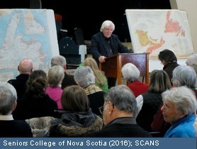
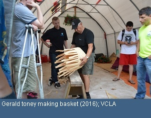
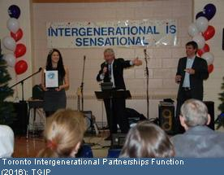
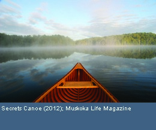
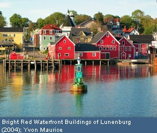
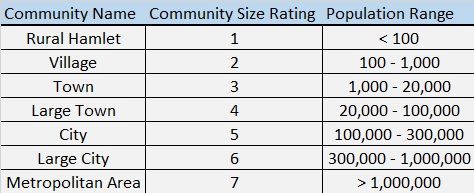

-
The Seniors College Association

of Nova ScotiaThe Seniors College Association of Nova Scotia, "SCANS" is a a registered non-profit
organization dedicated to providing non-credit academic courses to seniors (age 50+) in Nova Scotia. http://thescans.ca/Find out more about SCANS!Acadia University
Lifelong Learning Program
No matter what your age and your educational background, you'll find affordable and unique courses and events from Acadia Lifelong Learning.
https://www.openacadia.ca/Click to see the Acadia Campus on the map!Antigonish County Adult
Learning Association (ACALA)The ACLA is a community non-profit
organization which provides and family
learning opportunities in the Antigonish area.
http://www.acalalearn.ca/Click to show the ACLA's location on the map!The City of Whittlesea: Lifelong Learning Strategy and Action Plan
The City of Whittlesea believes that lifelong learning improves community connection, employment outcomes, cultural awareness, and general wellbeing. They believe that fostering lifelong learning will improve their community as a whole, for the future. https://www.whittlesea.vic.gov.au/
Click to see Whittlesea on the map!Valley Community

Learning AssociationThe VCLA is a non-profit organization which enables adults to address their learning needs and achieve their personal learning goals. http://www.vcla.ca/
View the location of the VCLA on the map!

Toronto Intergenerational
Partnerships (TIGP)TGIP designs and delivers intergenerational support programs in partnership with their community.
http://www.tigp.orgClick to zoom to TGIP's location!The District Municipality of Muskoka

Intergenerational Mentorship ProgramMuskoka’s Seniors Intergenerational Mentorship Program brings children and seniors together to enrich their lives and create lifelong learning through a variety of intergenerational activities. http://www.muskoka.on.ca
Click here to zoom to The Municipality of the District of Muskoka on the map!Lifelong Learning at Florida
Atlantic UniversityFlorida Atlantic University has a Lifelong Learning Society, which offers non-credit courses to adults of all ages. In addition to a diverse curriculum, FAU offers enriching concerts and entertainment. http://www.fau.edu/
Click to see FAU on the map!The Resort Municipality of Whistler
By 2020, The Resort Municipality of Whistler wishes to establish a learning culture and promote it both locally and regionally. They aim for learning to be diverse, with formal and informal opportunities which leverages Whistler's stature internationally.
https://www.whistler.caCheck out Whistler on the map!Learning Lunenburg
Learning Lunenburg wishes to use the town of Lunenburg, Nova Scotia as a model to conduct research on the planning of small communities, as it is a strong example of small community vitality. In addition to providing analytical information, Learning Lunenburg organizes educational programs and conferences which relate to integrated planning in small communities.
http://learninglunenburg.caCheck out Lunenburg on the map!

Community Size ChartClick the Images Below to Learn More About Local Initiatives That Help Foster Livable Communties
-
Brian Tracey Learning Quote(2016);Retrieved from Pinterest
-
Residents take computer classes at Nānākuli(2016); Ka Pua Initiative
-
Learning Quote Graphic(2016); Erin van Deudekom
-
Adding a Little Color(2010); The White House
-
Intergenerational Learning, Seattle (2015); Concierge Care Advisors
-
Gandhi Quote Graphic (2016); Lifehack.orgintergenerational learning(2016);Electronic Platform for Adult Learning in EuropeChinese Proverb Graphic (2016); Quotesgram
{kind=link}